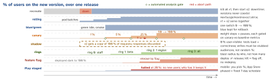

engineering · folio
In one line: Expose a new version to users in steps, measure each step against a baseline, and promote or abort automatically — so a bad release hurts 1–5 % of traffic for minutes instead of everyone for hours. Deploy ≠ release: the binary can be everywhere while the feature is off.
Download PDF Print view LaTeX source


Rolling update — the default
- K8s
RollingUpdate:maxSurge(extra pods, % rounds up) andmaxUnavailable(% rounds down), both default 25 %, not both 0. 10 replicas: ≤ 13 pods, ≥ 8 ready.maxUnavailable: 0= never below capacity. - Only readiness gates progress (+
minReadySeconds); nothing looks at error rates.progressDeadlineSeconds(600) only marks the rollout failed — no automatic rollback:kubectl rollout undo. - v1 and v2 serve at the same time ⇒ API, schema and messages compatible both ways.
- Recreate only when versions cannot coexist (singleton, exclusive lock).
Canary + automated analysis
- Route a small weight to v2 (mesh, ingress, Gateway API, ALB weights). No router ⇒ weight ≈ replica ratio (1 of 10 pods = 10 %).
- Compare canary with a baseline of the old version deployed at the same time, same size — not with the big, warm production fleet (caches, JIT, heap differ).
- Golden signals: latency (p99, successes and errors separately), traffic, errors, saturation; plus restarts/OOM and a business metric (checkout success).
- Kayenta (Spinnaker): Mann–Whitney U per metric at 98 % confidence → Pass/High/Low; score = % of metrics passing vs marginal / pass thresholds; critical metric fails → 0. Needs ≥ 50 data points per metric: steps last minutes–hours.
- SLO burn rate: error budget used per unit time; 14.4× over 1 h (and 5 min) = 2 % of a 30-day budget ⇒ abort.
Abort criteria — write them before the rollout
Error rate or p99 worse than baseline beyond a set margin · burn rate over threshold · crash loops / OOMKilled · saturation (CPU, pool, queue depth) · business KPI drop · no data = fail, not pass. Abort = weight to 0, canary scaled down; investigate, don’t retry.
Sticky routing
Per-request % sends one user to v1 then v2: flickering UI, lost session, v2-written data read by v1. Route by user/device id hash, cookie or header (Flagger A/B mode; ALB target-group stickiness); send internal users via a header. Mobile: route by App-Version.
Example — Argo Rollouts canary
apiVersion: argoproj.io/v1alpha1
kind: Rollout
spec:
replicas: 10
strategy:
canary:
canaryService: api-canary # router splits by weight
stableService: api-stable
trafficRouting: { nginx: { stableIngress: api } }
analysis: # background: whole rollout
templates: [{ templateName: success-rate }]
steps:
- setWeight: 5
- pause: { duration: 15m }
- setWeight: 25
- pause: {} # waits for a human: promote
# AnalysisTemplate: successCondition: result[0] >= 0.99,
# interval: 5m, failureLimit: 2 -> abort: weight 0, DegradedTools
| Argo Rollouts | Rollout CRD: canary steps (setWeight, pause, analysis), blueGreen;
AnalysisTemplate (Prometheus, Datadog, web, job) |
| Flagger | wraps a Deployment; interval, threshold, stepWeight, maxWeight; promote after
interval×max/step, roll back after interval×threshold; canary, A/B, B/G, mirroring |
| Spinnaker | pipelines + Kayenta automated canary analysis |
Shadow, rings, flags
- Shadow / dark launch: mirror live requests to v2, compare responses offline. Great for rewrites and load; dangerous with side effects (double charge, double email) — stub writes.
- Rings: staff → beta → one region → all, each baked.
- Flags: deploy moves code, a flag releases behaviour — per user, reversible in seconds. Canary the binary, flag the feature.
Mobile — the store is your rollout controller
| App Store | phased 1/2/5/10/20/50/100 %, 7 days, auto-update users |
| Google Play | staged: any %, halt (no new users), resume |
| EAS Update | eas update --rollout-percentage=10 (JS only) |
| server | flags / kill switch: the only lever on installed apps |
Traps
- “K8s rolls back a bad rollout” — it stops; undo is on you.
- Canary vs the whole prod fleet instead of a same-age baseline.
- 5 % of a quiet hour = too few requests to judge anything.
- Shadowing a write path: every payment happens twice.